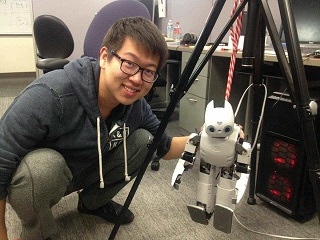

Huazhe(Harry) Xu
 How to pronounce my name?
In the Wade-Giles system of romanization, it is rendered as Huache Tsu.
In Chinese characters, it is 许华哲.
About Me
I am a third year Ph.D student in BAIR (Berkeley AI Research) advised by Prof. Trevor Darrell. I am also working as an intern researcher in Facebook AI Research with Prof. Tengyu Ma and Yuandong Tian. I used to be an undergraduate student in Department of Electronic Engineering, School of Information Science and Technology, Tsinghua University. I studied as an exchange student in Electrical and Computer Engineering Department, University of Toronto in Fall 2014.
I worked in Center for Intelligent Image and Document Information Processing, advised by Prof. Qi Tian(UTSA) and Prof. Liangrui Peng since 2014. In Fall 2014, I spent 3 months wonderful time in Machine Learning Group in University of Toronto co-advised by Prof. Sanja Fidler and Prof. Raquel Urtasun. In Summer 2015, I worked at Berkeley Vision and Learning Center(BVLC) and International Computer Science Institute(ICSI) as a research assistant, advised by Prof. Trevor Darrell and Prof. Jiashi Feng.
My research interests lie in computer vision, deep learning, reinforcement learning and their applications.
Education

Aug. 2012 - Jul. 2016 (Expected), Department of Electronic Engineering, Tsinghua University,
Balchlor of Engineering, GPA: 93/100, ranking: 5/238. Average of Math and Math-Related Courses: 95.4/100.
Aug. 2014 - Dec. 2014, School of Electrical and Computer Engineering, University of Toronto,
Exchange Student, GPA: 4.0/4.0.
July. 2015 - Sept. 2015, Department of Electrical and Computer Engineering, University of California, Berkeley,
Visiting Researcher.
Selected Research Projects
Weakly Supervised Deep Scene Parsing with Attributes,
Huazhe Xu, Jiashi Feng, Trevor Darrell,
Jul 2015 - Nov 2015, UC Berkeley,
Natural Language Object Retrieval with RNN,
Ronghang Hu, Huazhe Xu, Marcus Rohrbach, Jiashi Feng, Kate Saenko and Trevor Darrell,
Jul 2015 - Nov 2015, UC Berkeley,
Automobile Visual Taste Ranking,
Huazhe Xu, Sanja Fidler, Raquel Urtasun,
2015 Fall , University of Toronto,
Publications and Manuscripts
H. Gao*, H. Xu*, Q. Cai, R. Wang, F. Yu, T. Darrell, Disentangling Propagation and Generation for Video Prediction, arXiv preprint. [pdf]
H. Tang*, D. Lee*, J. Zhang, H. Xu, T. Darrell, P. Abbeel, Modular Architecture for StarCraft II with Deep Reinforcement Learning. The 14th AAAI Conference on Artificial Intelligence and Interactive Digital Entertainment (AIIDE'18). [pdf]
Y. Luo*, H. Xu*, Y. Li, Y. Tian, T. Darrell, T. Ma, Algorithmic Framework for Model-based Reinforcement Learning with Theoretical Guarantees . To appear at ICLR'19 (also appeared as ICMLW'18, NeurIPSW'18). [pdf]
Y. Gao*, H. Xu*, F. Yu, S. Levine, T. Darrell, Reinforcement Learning from Imperfect Demonstrations. in NIPS Deep RL Syposium. [pdf]
H. Xu*, Y. Gao*, F. Yu, T. Darrell, End-to-end Learning of Driving Models from Large-scale Video Datasets. in CVPR 2017 (oral). [pdf]
R. Hu, H. Xu, M. Rohrbach, J. Feng, K. Saenko, T. Darrell, Natural Language Object Retrieval. in CVPR 2016 (oral). [pdf]
Tian Xie, Qian Han, Huazhe Xu, Zihao Qi, Wenqian Shen. A Low-Complexity Linear Precoding Scheme Based on SOR Method for Massive MIMO Systems. Vehicular Technology Conference (VTC Spring), 2015 IEEE 81st , vol., no., pp.1-5, 11-14 May 2015. [pdf]
Honors and Awards
EECS Excellence Award, UC Berkeley, 2016
Comprehensive Excellent Scholarship, Tsinghua Univ, 2013
Academic Excellent Scholarship, Tsinghua, Univ, 2014
Academic Excellent Scholarship, Tsinghua, Univ, 2015
News!
Nov 19, 2018, Our Starcraft 2 Project is covered by Synced (机器之心) and Import AI.
Dec 18, 2017: Giving a talk at Berkeley DeepDrive Workshop.
Oct 31, 2017: Giving a talk at MIT vision seminar in Boston.
June 1, 2017: Giving a talk in at Tsinghua University in Beijing.
Our paper 'End-to-end Learning of Driving Model from Largescale Dataset' appeared at 'New_era' Wechat Media.
Interviewed by a 'Leiphone' reporter about BAIR Blog.
Service
Reviewer of ICLR’19
Reviewer of ACCV’18
Reviewer of NeurIPS’18
Reviewer of ICML’18 ’19
Reviewer of CVPR’18 ’19
Reviewer of NIPS'17 Intelligent Transportation Workshop
Reviewer of IEEE Transactions on Multimedia’ 16, 17
Editor in BAIR Blog Editorial Board, manager of BAIR facebook handle.
Miscellaneous
Alain De Botton: The Art of Travel (I traveled less often after reading this :p)
Introduction to Image Understanding (A lovely Course from Prof. Sanja Fidler)
Attempts
Here is a partial catalog of my attempts at becoming more than what I am today. I doubt I will ever succeed totally but I hope I will never stop trying.Piano Project
I am now learning to play the piano(again!) with pianist Anne Rainwater. Here are some pieces I enjoy playing recently:Piano Sonata No. 3 in C major, Op. 2, No. 3, Ludwig van Beethoven
Impromptu in B-flat Major D. 935, No. 3 (Op. 142), Franz Schubert
French Suites, BWV 817, Johann Sebastian Bach
Prelude and Fugue No.2, Johann Sebastian Bach
4 Improptus, D899, Franz Schubert
kinderszenen op. 15, Robert Schumann
Waltz in D-flat major, Op. 64, No. 1, Valse du petit chien, Frédéric Chopin
Grande valse brillante in E-flat major, Op. 18, Frédéric Chopin
Tempest Sonata, Ludwig van Beethoven